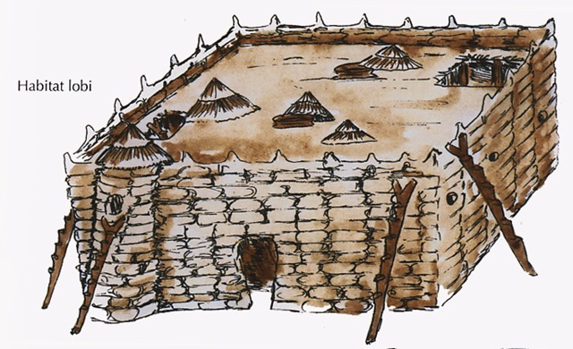
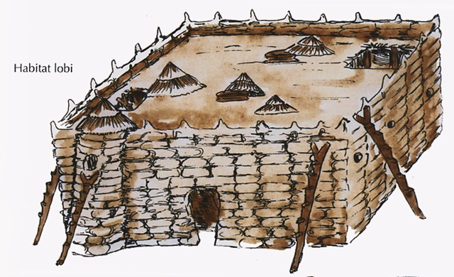

.jpeg)
Origines et culture
Les Lobi sont un peuple d'Afrique de l'Ouest dont l'origine est souvent racontée à travers des récits mythiques, notamment une migration depuis le nord du Ghana vers le Burkina Faso et le nord-est de la Côte d'Ivoire il y a quelques siècles. Leur société est structurée autour de lignages et de cultes des ancêtres, en particulier le cultes des fétiches et les pratiques divinatoires.
Les Lobi sont originaires du nord du Ghana, où ils auraient migré il y a plusieurs siècles. Ils traversèrent la région de Wa et la Volta Noire avant de s'installer au Burkina Faso, selon certaines sources. L'implantation des Lobi au Burkina Faso a été progressive, avec l'installation du clan des Kambiré à Batié vers 1770, selon Henri Labouret. Leurs migrations sont également liées à des récits mythiques qui racontent leur parcours depuis leur lieu d'origine.
Les Lobi ont une maison sacrée appelée "thilduù", où ils rendent hommage à leurs ancêtres maternels. Ce culte des ancêtres est très important pour les Lobi et se manifeste à travers des rites et des objets rituels. La "thilduù" est souvent une pièce séparée de la maison où sont conservés des tabourets et d'autres objets rituels. Les Lobi sont animistes et croient que les esprits de la nature, appelés "thil", sont présents dans leur environnement. Ils sculptent des figurines de bois ou de métal pour représenter ces esprits et les honorer dans leurs rites.
Caractéristiques architecturales
La maison lobi est caractérisée par sa forme rectangulaire ou carrée, son toit en terrasse (ou à deux pentes en chaume) et ses murs en argile, souvent avec une base en pierre. Les murs sont relativement simples, servant principalement à délimiter l'espace et à supporter le toit, tandis que le poids du toit est porté par des piliers en bois à l'intérieur. Les greniers (thune) peuvent être situés dans la pièce centrale (dans les maisons traditionnelles) ou à l'extérieur (dans les nouvelles fermes).
Les maisons sont généralement de forme rectangulaire ou carré, ce qui leur confère une allure de forteresse.
Les maisons sont surmontées d'un toit en terrasse (plat) ou de toits en chaume à deux pentes.
Les murs sont généralement construits en argile, parfois avec une base en pierre pour plus de résistance.
Des piliers en bois sont utilisés à l'intérieur pour supporter le toit, tandis que les murs ont une fonction de délimitation.
Les greniers sont un élément essentiel de la maison lobi, pouvant être situés à l'intérieur (dans les maisons traditionnelles) ou à l'extérieur (dans les nouvelles fermes).
Les maisons lobi sont généralement dépourvues de fenêtres.
Les habitations lobi sont généralement dispersées dans le village, à une distance de "portée de flèche".
Les matériaux utilisés pour la construction sont principalement locaux (argile, pierre, bois).
Galerie
.jpeg)
.jpeg) 

Vue extérieure d'une maison Lobi, typique du Burkina Faso rural.